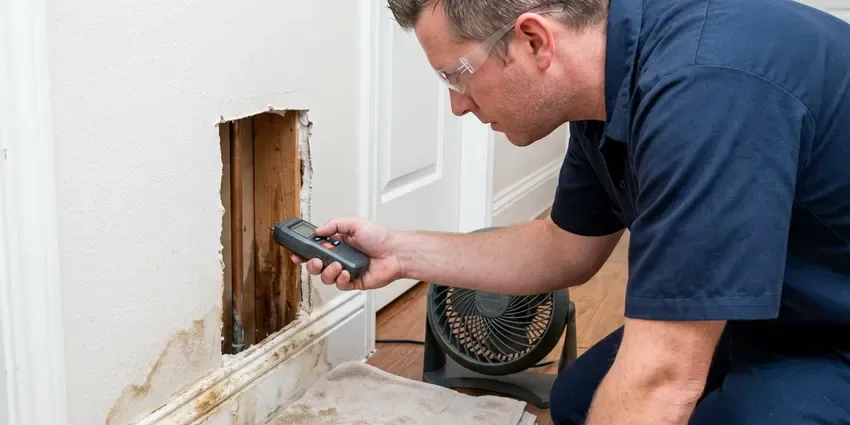

Walls Waterproofing in Blaine, MN
Water seeping through a foundation wall rarely fixes itself. We seal the cracks and add drainage to keep Blaine, MN basements and crawl spaces dry.
- Crack Injection Sealing
- Licensed Plumbers on Every Job
- Free Estimates
- RedGard, Kerdi and Hydro Ban Membranes

Wall Waterproofing Done Right in Blaine, MN.
Call and we will trace the moisture with meters and thermal imaging before suggesting a fix.
Lasting Waterproofing for Showers, Block and Foundations in Blaine, MN
CNV Plumbing uses cementitious coatings and injection resins rated for below-grade walls, not paint-store sealers. Those sealers peel. A proper repair in your Blaine, MN home starts with a moisture reading on the block, then a crack injection or a drainage fix, then a coating that can take water pushing from the soil side.
Some of what we do:
- Shower wall and pan membranes before tile
- Block and stem wall sealing against sprinkler overspray
- Interior wall coatings for block and poured walls

Additional Plumbing Maintenance Services in Blaine, MN
Our maintenance and specialty plumbing services in Blaine, MN protect your home year-round and extend the life of every system.


Customers
Why Choose CNV Plumbing for Walls Waterproofing in Blaine, MN?
Footing joints leak. Our crews know how footings, cold joints and window wells let water in, and they follow local code on drainage and grading on every job. When the job needs a permit, we pull it.
- Home Protection, Dry walls keep mold out of the framing and protect your home's value.
- Experienced Crew, Our techs train on current membrane systems and safe work practices.
- Source First, We fix the plumbing or drainage problem before any waterproofing goes on.
Citywide Coverage
Our trucks cover all of Blaine and the towns around it. A wet basement on the far edge of town gets the same moisture survey and written quote as one a mile from our shop, and we schedule by how urgent the leak is, not by zip code. Distance does not change that.
Experienced Team
The crew that shows up in Blaine, MN has handled bowed block walls, leaking window wells, failed shower pans and sump pits that ran over in a heavy storm. Few surprises are left. You get a straight answer about what they find.
Safety-First Approach
Waterproofing work follows the building code and the manufacturer's instructions, and on a job in Blaine, MN we pull permits for excavation and drainage changes when the city requires them. Trench work gets shored or sloped. Utility lines are marked before we dig.
Trusted Certified Blaine Plumbing Services Professionals
At CNV Plumbing, we take pride in licensed, certified plumbing services throughout Blaine, MN. Credentials matter in this trade. Every repair, install and maintenance visit follows strict safety and quality rules, and the plumbers doing the work carry recognized industry credentials.
Call Us Now PHCC Plumbing Contractor Recognition
PHCC Plumbing Contractor Recognition Better Business Bureau (BBB) Accreditation
Better Business Bureau (BBB) Accreditation Angi Certified Pro
Angi Certified Pro ISO 9001 Quality Management Certification
ISO 9001 Quality Management CertificationFoundation, Shower and Block Wall Sealing in Blaine, MN
Commercial Walls Waterproofing in Blaine
Commercial basements, elevator pits and mechanical rooms in Blaine take on water the same way houses do, just with more at stake. One wet electrical room can close a business for days. We schedule around operating hours, work with property managers on access, and follow the waterproofing specs written into the building plans for below-grade walls. Downtime stays short.

Plumbing Leak Behind Walls in Blaine
A drip from a shower valve cartridge, a sweated copper stub or a loose drain slip nut can soak a wall cavity for months before paint bubbles. We find it with a moisture meter, a thermal camera that picks up the cooler wet area, and a pressure test on the supply lines. Then we cut a clean access hole. We replace the leaking fitting or pipe section. We pull wet insulation and run fans until the cavity reads dry.
Waterproofing Costs vs. Repeat Water Damage in Blaine, MN
Paying once beats paying every two years. Waterproofing a shower wall usually lands in the low thousands, while repeat drywall, cabinet and floor repairs add up fast, and mold remediation on top of that can double the bill. Exterior block sealing depends on wall length. We write up each option with its price so you can compare.
Drainage System Integration in Blaine, MN
Water has to go somewhere once a wall is sealed. Exterior footing drains, interior drain tile and surface French drains all do the same job at different depths. We match the drain to where the water comes from, which might be a high water table, a yard that slopes toward the house, or a downspout emptying right at the foundation. Downspouts get extended at least four feet out.
Laundry Room and Utility Wall Waterproofing in Blaine, MN
Rubber washing machine hoses burst. We swap them for braided stainless hoses, put a drain pan under the washer with a line to a floor drain where one is available, and install a quarter-turn shutoff or an automatic leak valve on the supply box. Water heaters get a pan too. Behind the heater we can install moisture-resistant board and seal it.
Crawl Space Vapor Barriers in Blaine
Bare dirt in a crawl space releases gallons of water vapor a day into the air under your floor. A 10 mil or heavier polyethylene barrier, overlapped a foot at every seam and taped, cuts that off and keeps the joists and subfloor dry. We run it up the foundation walls and hold it in place with termination strip. Cheap fix, big difference.
Foundation Crack Repair & Sealing in Blaine
Hairline cracks in poured concrete walls leak more water than their size suggests. We inject them with low-pressure polyurethane, which expands to fill the crack from the inside face to the soil side, or with epoxy when the crack also needs structural bonding. Horizontal cracks are different. They can mean the wall is bowing from soil pressure, so we check for movement with a level before we seal anything. Most vertical cracks get sealed in one visit.

Exterior Block Wall Waterproofing in Blaine, MN
White crust on block or stem walls is efflorescence, salt left behind as water moves through the masonry and dries. The usual cause is a sprinkler head spraying the wall instead of the plants, or soil graded toward the foundation. We fix the water first. Then we clean the wall, let it dry and apply a breathable masonry sealer or elastomeric coating.
Nearby Wall Waterproofing in Blaine, MN
Moisture meters and thermal cameras ride on every truck. That lets us give you an answer on the first visit, including where the water is coming from and which repair fits, instead of scheduling a second trip just to diagnose. Quotes come in writing.
Local crews matter for this work. We can stop back after the first big rain to make sure the wall is holding, check the sump and look at the drain tile cleanout, since our shop is close to most of Blaine, MN. Follow-up visits are part of the job.
CNV Plumbing at a Glance
- Licensed and insured plumbers serving Blaine, MN
- 24/7 emergency service with same-day scheduling
- Clear written estimates, no hidden fees
- 4.8-star rated by 501+ Minnesota customers
Blaine Map
Blaine Information
- Population
- 73,774
- Area codes
- 612/507/320
- Service area
- Blaine and communities within 40 miles
- Nearby
- Coon Rapids, Brooklyn Park, Maple Grove, Minneapolis
Wet basement walls feed mold and rot joists. Sealing the wall and draining the soil keeps a Blaine, MN crawl space or basement dry year round.
Talk to a Plumber
Call CNV Plumbing for reliable plumbing work done by licensed pros in Blaine, MN.
Our Specialized Plumbing Services in Blaine, MN
At CNV Plumbing, we handle the full list of plumbing services across Blaine, MN. We go from leak detection all the way to full system installations, for homes and commercial buildings, and we do it quickly at a fair price. Explore our core services below:


How a Wall Waterproofing Job Goes in Blaine, MN
This is how a damp, stained wall becomes dry and protected.
Request a Quote
Call (612) 712-9569 to set up an inspection. We walk the foundation and check for cracks, and we ask when the water shows up.
Thorough Inspection
We check every wall for cracks, efflorescence and bowing, and then check the grading and downspouts. That tells us where the water comes from.
Written Plan
You get a written plan, which may call for crack injection, drain tile, an exterior membrane or a combination.
Frequently Asked Questions About Walls Waterproofing in Blaine
Shower wall waterproofing with a membrane system usually runs $1,200 to $3,500 including demolition and backer board, with the new tile priced separately. Block wall sealing outside often costs $800 to $3,000. Foundation waterproofing below grade is usually $2,500 to $8,000.
It depends on the wall and the site. On exterior foundation work we use rubberized asphalt sheet membranes, polyurethane-modified asphalt liquids, bentonite panels and crystalline coatings, picking the one that suits the soil and the wall material. For showers, we use Kerdi, RedGard or Hydro Ban.
Small crack patches, sure. A complete system takes knowledge of drainage, foundation behavior and the application steps for each product, and mistakes are expensive since they stay hidden behind finished walls for years. The footing joint is where most DIY jobs we see failed.
Often, but not always. A remodel that moves the valve, changes the drain location or alters supply piping usually needs a permit, but swapping a failed membrane on the same layout might not. We look up your local requirements and get the permit if one is required.
Some handy homeowners do. Rolling on a liquid membrane is not hard, but most leaks start at the seams, inside corners and drain, and a pan also needs a correct quarter-inch-per-foot slope plus a 24-hour flood test. A pro install lowers the odds of hidden damage.
Schluter Kerdi, Custom RedGard and Laticrete Hydro Ban cover most of our showers. Sheet membranes like Kerdi suit tight schedules because there is nothing to cure, while liquids like RedGard and Hydro Ban go on in two coats and need to dry between them. Each manufacturer's install steps are followed exactly.
Most systems we install should go 20 to 30 years or longer. Life span comes down to how it was installed, what method was used and what the soil around the house is like. The sump pump will need replacing well before that. Plan on a new pump every seven to ten years.
Waterproofing takes away the moisture mold needs to grow. Existing mold should be removed and the area dried before any sealer goes on, and for larger growth, roughly anything over ten square feet, we recommend a remediation company. We remove smaller affected areas ourselves.
Hear From Customers Who Hired Our Plumbing Experts

Patricia H.
We had a slab leak that two other companies could not find. CNV Plumbing located it in under an hour with a listening device. They rerouted the line through the attic instead of breaking up the floor, so we kept our kitchen tile.
Slab Leak Repair · Maple Grove, MN
Nathan E.
Our tankless heater kept throwing an error code and shutting off mid shower. The tech flushed the heat exchanger, which was full of scale, and replaced a bad flow sensor. Hot water has been steady for half a year now.
Water Heater Repair · Coon Rapids, MN
Brian W.
I smelled gas behind the dryer and called right away. The plumber found a corroded flex connector, replaced it, and pressure tested the whole line before turning the gas back on. He let me watch the gauge hold steady for fifteen minutes.
Gas Line Repair · Plymouth, MNAngela D.
Our sump pump quit during a storm and the water was an inch from the basement carpet. CNV Plumbing put in a new pump with a battery backup that same evening. We have had two heavy rains since. It kicked on both times.
Sump Pump · Maple Grove, MNCarlos V.
Our house still had galvanized pipe, and upstairs the shower was a trickle. The crew repiped everything in PEX over three days and patched every drywall hole before they left. The pressure difference is night and day.
Repiping · Brooklyn Park, MN
Marcus H.
Grease from the fryer line kept clogging the kitchen drain at my diner. CNV Plumbing hydro jetted the line after closing, showed me the buildup on camera, and set us up on a quarterly cleaning so it does not catch us on a Friday again.
Drain Cleaning · Minneapolis, MN